Spring boot 2学习笔记与简单实践 create date:2021-3-22 11:32:52
创建项目 直接File→Project然后点spring boot initializer 然后点上web 起个好听的名字
1 2 3 4 5 6 7 8 @RestController public class HelloController @RequestMapping("/hello") public String helloSpringBoot () return "Hello, Spring Boot 2!" ; } }
访问http://localhost:8080/hello 得到
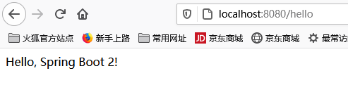
（这个是restful风格的）
所有的配置 在application.properties里面配
快速整合thymeleaf 参考：https://blog.csdn.net/weixin_40936211/article/details/88141982 http://localhost:8080/thymeleaf
@SpringBootApplication是应用程序主入口，spring boot 入口从这里进
编译好的文件，可以直接在编译好的jar 用java命令运行
pom.xml解读 每一个xml都有这样一个父项
1 2 3 4 5 6 <parent > <groupId > org.springframework.boot</groupId > <artifactId > spring-boot-starter-parent</artifactId > <version > 2.4.4</version > <relativePath /> </parent >
父项目做版本管理，底下的版本号不写的话 默认就是父项目里面存的版本号<artifactId>spring-boot-starter-parent</artifactId> →<artifactId>spring-boot-dependencies</artifactId> →
1 2 3 4 5 6 7 8 9 10 11 12 <mssql-jdbc.version > 8.4.1.jre8</mssql-jdbc.version > <mysql.version > 8.0.23</mysql.version > <nekohtml.version > 1.9.22</nekohtml.version > <neo4j-java-driver.version > 4.1.1</neo4j-java-driver.version > <netty.version > 4.1.60.Final</netty.version > <netty-tcnative.version > 2.0.36.Final</netty-tcnative.version > <oauth2-oidc-sdk.version > 8.36.1</oauth2-oidc-sdk.version > <nimbus-jose-jwt.version > 8.20.2</nimbus-jose-jwt.version > <ojdbc.version > 19.3.0.0</ojdbc.version > <okhttp3.version > 3.14.9</okhttp3.version > <oracle-database.version > 19.8.0.0</oracle-database.version > <pooled-jms.version > 1.2.1</pooled-jms.version >
1、 spring boot 有很多的starter，以spring-boot-starter-*命名https://docs.spring.io/spring-boot/docs/current/reference/html/using-spring-boot.html#using-boot-starter
条件装配等 1 2 3 4 5 6 7 8 9 10 11 12 13 14 15 16 17 18 @Import({Pet.class}) @Configuration(proxyBeanMethods = true) public class MyConf @Bean @ConditionalOnJava(JavaVersion.EIGHT) public Pet tmct () return new Pet("tomcat" ); } @Bean @ConditionalOnBean(Pet.class) public Pet jerry () return new Pet("jerry" ); } }
一共创建三个pet：
@Import({Pet.class}) 调用无参构造器创建一个com.runsstudio.springboot2_learning.bean.Pet：Pet{petName=’null’}
@ConditionalOnJava(JavaVersion.EIGHT)//条件注解，只有当java版本是1.8的时候才装配，创建一个tmct：Pet{petName=’tomcat’}
@ConditionalOnBean(Pet.class)//容器中存在这个bean的时候才会调用，创建jerry：Pet{petName=’jerry’}
@ConfigurationProperties使用 首先新建一个Car类bean，然后标上注解
1 2 3 4 5 6 7 @Component @ConfigurationProperties(prefix = "mycar") public class Car private String brand; private Double price; }
然后在application.properties中写配置
1 2 mycar.brand =BYD mycar.price =100000.0d
小tip：写mycar.price=100000也是可以的
然后编写测试，使用spring 自动注入一个car
1 2 3 4 5 6 7 8 9 10 @RestController public class CarController @Autowired Car car; @RequestMapping("/car") public String getCar () System.out.println(car); return car.toString(); } }
访问http://localhost:8080/car 就可以在页面上得到Car{brand='BYD', price=100000.0}
@SpringBootApplication原理 @SpringBootApplication=三个注解之和：
@SpringBootConfiguration
@EnableAutoConfiguration – 起作用的主要是这个注解
@ComponentScan
插件之lombok的使用： 首先在pom.xml引入配置
1 2 3 4 5 <dependency > <groupId > org.projectlombok</groupId > <artifactId > lombok</artifactId > <version > ${lombok.version}</version > </dependency >
然后就可以愉快的编写类了（参考LombokCar.java）
1 2 3 4 5 6 7 8 9 10 11 12 13 14 import lombok.AllArgsConstructor;import lombok.Data;import lombok.NoArgsConstructor;import lombok.ToString;@Data @NoArgsConstructor @AllArgsConstructor @ToString public class LombokCar private String brand; private Double price; }
另外，他还提供了@Slf4j注解,使用后就可以使用log.info等等记录日志
1 2 3 4 5 6 7 8 9 10 11 12 @Slf4j @RestController public class CarController @Autowired Car car; @RequestMapping("/car") public String getCar () log.info("get car!!" ); return car.toString(); } }
访问http://localhost:8080/car, 输出
spring boot提供的静态资源目录： 类路径下：
/static
/public
/resources
/META-INF/resources
比如 有一个src/main/resources/public/avatar.pnghttp://localhost:8080/avatar.png就可以看到
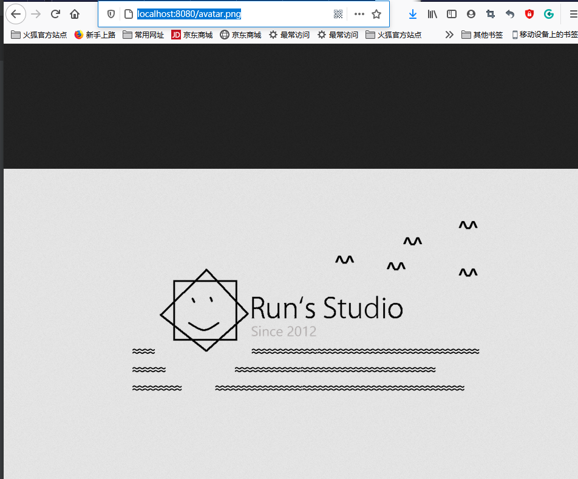
如果配置了静态请求，同时又动态配置了一个controller，
比如说有一个controller
1 2 3 4 5 6 7 @RestController public class CarController @RequestMapping("/avatar.png") public String getCar () return "avatar" ; } }
这个时候，动态配置的会覆盖静态请求的。因为静态请求的是拦截/**，范围最广 动态的更详细
欢迎页
配置index.html这个页面（配置的时候静态资源的路径不能配置，也就是不能配置spring.web.resources.static-locations=别的路径，否则不能正常访问）
或者配置index的动态转发规则http://localhost:8080/会自动跳转favicon
静态资源里有favicon.ico，则页面图标会自动变成这个
从转发中获取值 1 2 3 4 5 6 7 8 9 10 11 12 13 14 15 16 17 18 19 20 21 22 23 @GetMapping("/goto") public String goToPage (HttpServletRequest request) request.setAttribute("msg" ,"success" ); request.setAttribute("code" ,200 ); return "forward:/success" ; } @ResponseBody @GetMapping("/success") public Map<String,Object> success (@RequestAttribute("msg") String msg, @RequestAttribute("code") String code, HttpServletRequest httpServletRequest) Map<String,Object> map=new HashMap<>(); map.put("request_msg" ,msg); map.put("request_code" ,code); map.put("request_code_byhttpServletReq" ,httpServletRequest.getAttribute("code" )); return map; }
页面转发 SpringMVC以前版本的@RequestMapping，到了新版本被下面新注释替代，相当于增加的选项：
@GetMapping
@PostMapping
@PutMapping
@DeleteMapping
@PatchMapping
从命名约定我们可以看到每个注释都是为了处理各自的传入请求方法类型，即@GetMapping用于处理请求方法的GET类型，@ PostMapping用于处理请求方法的POST类型等。
首先是登录界面 后台controller的编写：
1 2 3 4 5 6 7 8 9 10 11 12 @Controller public class IndexController @GetMapping(value = {"/", "/login"}) public String loginPage () return "login" ; } }
跳转到登录界面，这样访问localhost:8080自动跳转到登录界面
1 2 3 4 5 6 7 8 9 10 11 12 13 14 15 16 17 18 19 20 21 22 23 24 25 26 27 28 29 30 31 32 33 34 35 36 37 38 39 40 41 42 43 44 45 46 47 @PostMapping("/access") public String loginProcessor (User user, HttpSession session, Model model ) if (!StringUtils.hasLength(user.getPassword())){ System.out.println("密码没有填写" ); model.addAttribute("msg" ,"nullPassword" ); return "404" ; } if (!StringUtils.hasLength(user.getUsername())){ System.out.println("用户名没有填写" ); model.addAttribute("msg" ,"nullusername" ); return "404" ; } if ("111" .equals(user.getUsername())&&"123" .equals(user.getPassword())){ System.out.println("登陆成功" ); session.setAttribute("user" ,user); session.setAttribute("code" ,200 ); return "redirect:/index" ; } model.addAttribute("msg" ,"wrongPassword" ); session.setAttribute("code" ,403 ); return "login" ; } @GetMapping("/index") public String indexPage (HttpSession session) if (session.getAttribute("code" )==null ){ System.out.println("在没有session的情况下访问了index" ); return "404" ; } if (Integer.parseInt(session.getAttribute("code" ).toString())==200 ) return "index" ; return "404" ; }
登录页面（login.html）的前端部分核心代码：
1 2 3 4 5 6 7 8 9 10 <form class ="form-signin" action ="/access" method ="post" > <div class ="login-wrap" > <input name ="username" type ="text" class ="form-control" placeholder ="用户名" autofocus > <input name ="password" type ="password" class ="form-control" placeholder ="密码" > <button class ="btn btn-lg btn-login btn-block" type ="submit" > <i class ="fa fa-check" > </i > </button > </div > </form >
这里<input name="username"和<input name="password"和User里面的属性一一对应 如果对应不上（比如说input name="password1"），则装配失败，返回User(username=111, password=null)User(username=111, password=123)
User类上面没有装载到容器里！
使用User类的地方没有注解
需要使用重定向功能，如果不使用，而是填写如下面的代码：
1 2 3 4 5 6 7 if ("111" .equals(user.getUsername())&&"123" .equals(user.getPassword())){ System.out.println("登陆成功" ); session.setAttribute("user" ,user); session.setAttribute("code" ,200 ); return "index" ; }
则页面不会重定向，这样的话地址就还是localhost:8080/login，如果这个时候我们刷新页面，就会造成表单重复提交！
thymeleaf语法小知识： 用双中括号可以括起来
1 2 3 <img src ="images/photos/user-avatar.png" alt ="" /> [[${session.user.username}]] <span class ="caret" > </span >
效果：
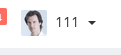
发送额外请求 查询股票价格 难点在于解析JSON，不同的包地下都有这个函数 但是使用起来有些不一样
import org.springframework.boot.configurationprocessor.json.JSONArray;
import org.springframework.boot.configurationprocessor.json.JSONObject;
1 2 3 4 5 6 7 8 9 10 11 12 13 14 15 16 17 System.out.println(backStr); JSONArray jsonArray=new JSONArray(backStr); System.out.println(jsonArray); for (int i=0 ;i<jsonArray.length();i++){ JSONObject jsonObject = jsonArray.getJSONObject(i); String day = jsonObject.getString("day" ); Double open = jsonObject.getDouble("open" ); Double high = jsonObject.getDouble("high" ); Double low = jsonObject.getDouble("low" ); Double close = jsonObject.getDouble("close" ); int volume = jsonObject.getInt("volume" ); StockPrice sp=new StockPrice(day,open,high,low,close,volume); System.out.println(sp); stockPriceList.add(sp); }
获取到LIST对象后，封装到模型，然后在前端页面里面，用th:each标签处理列表，例如:
1 2 3 4 5 6 7 8 9 </thead > <tbody > <tr th:each ="person,personStat:${personList}" > <td th:text ="${personStat.index+1}" > </td > <td th:text ="${person.firstName}" > [[${personList}]]</td > <td th:text ="${person.lastName}" > Otto</td > <td th:text ="${person.userName}" > @mdo</td > </tr > </tbody >
– responsive_table.html
1 2 3 4 5 6 7 8 9 10 <tr th:each ="stockPrice,stockPriceStat:${stockPriceList}" > <td > 603259</td > <td > 药明康德</td > <td th:text ="${stockPrice.day}" > </td > <td th:text ="${stockPrice.open}" class ="numeric" > -0.01</td > <td th:text ="${stockPrice.high}" class ="numeric" > -0.36%</td > <td th:text ="${stockPrice.low}" class ="numeric" > $1.39</td > <td th:text ="${stockPrice.close}" class ="numeric" > $1.39</td > <td th:text ="${stockPrice.volume}" class ="numeric" > $1.38</td > </tr >
这里personStat表示person这个遍历的时候的一些量，比如说当前序号index，还有count等一些属性，最常用的就是用来获取当前id
拦截器（Interceptor） 登录检查 必须要实现HandleInterceptor接口 .
1 2 3 4 5 6 7 8 9 10 11 12 13 14 15 16 17 18 19 20 21 22 public class LoginInterceptor implements HandlerInterceptor @Override public boolean preHandle (HttpServletRequest request, HttpServletResponse response, Object handler) throws Exception HttpSession session = request.getSession(); Object loginUser = session.getAttribute("user" ); System.out.println("拦截器preHandle正在处理：当前session中的loginUser=" +loginUser); if (loginUser!=null ){ return true ; } session.setAttribute("msg" ,"请先登录" ); response.sendRedirect("/login" ); return false ; } }
编写完拦截器之后的步骤有2个：
需要配置拦截器拦截哪些请求
然后还要把拦截器加入到容器中WebMvcConfigurer接口
1 2 3 4 5 6 7 8 9 @Configuration public class AdminWebConfig implements WebMvcConfigurer @Override public void addInterceptors (InterceptorRegistry registry) registry.addInterceptor(new LoginInterceptor()) .addPathPatterns("/**" ) .excludePathPatterns("/" ,"/login" ,"/css/**" ,"/fonts/**" ,"/images/**" ,"/js/**" ,"/access" ); } }
这里拦截/**所有请求，但是把"/","/login","/css/**","/fonts/**","/images/**","/js/**","/access"放行了，/access 也要放行，因为是post请求到这个方法登录的。
拦截器原理
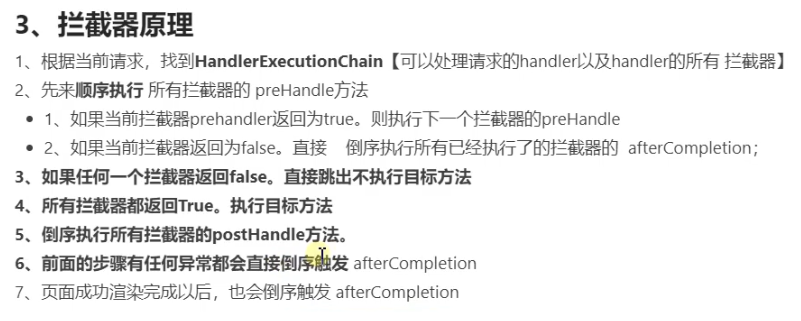
prehandle的时候是正向的，post的时候是倒序的，中间有任何异常，从afterCompletion倒序
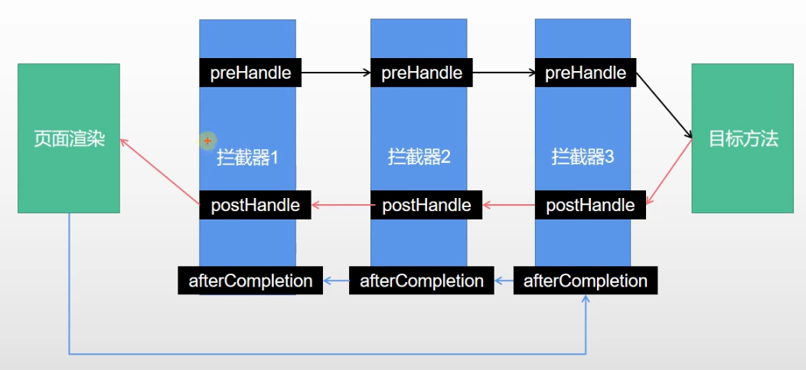
文件上传 先配置表单页面
1 2 3 4 5 6 7 8 9 10 11 12 13 14 15 16 17 18 19 <form role ="form" th:action ="@{/upload}" method ="post" enctype ="multipart/form-data" > <div class ="form-group" > <label for ="exampleInputEmail1" > 邮件</label > <input type ="email" name ="email " class ="form-control" id ="exampleInputEmail1" placeholder ="Enter email" > </div > <div class ="form-group" > <label for ="exampleInputPassword1" > 名字</label > <input type ="text" name ="username" class ="form-control" id ="exampleInputPassword1" placeholder ="Password" > </div > <div class ="form-group" > <label for ="singleInputFile" > 作业</label > <input type ="file" name ="homework" id ="singleInputFile" > </div > <div class ="form-group" > <label for ="multiInputFile" > 多文件上传</label > <input type ="file" name ="photos" id ="multiInputFile" multiple > </div > <button type ="submit" class ="btn btn-primary" > 提交</button > </form >
要点：
th:action="@{/upload}" method="post" enctype="multipart/form-data"是文件上传的固定写法id可以瞎写，但是name要对应
如果想要多文件上传，要加上multiple属性
1 2 3 4 5 6 7 8 9 10 11 12 13 14 15 16 17 18 19 20 21 22 23 24 25 26 27 28 @PostMapping("/upload") public String handlePostUpload (@RequestParam("email") String email, @RequestParam("username") String username, @RequestPart("homework") MultipartFile homework, @RequestPart("photos") MultipartFile[] photos) throws IOException log.info("上传的信息：email={},username={},homework={},photos={}" ,email,username,homework.getSize(),photos.length); if (!homework.isEmpty()){ homework.transferTo(new File("I:\\1\\" +homework.getOriginalFilename())); } if (photos.length>0 ){ for (MultipartFile file:photos){ if (!file.isEmpty()){ file.transferTo(new File("I:\\1\\" +file.getOriginalFilename())); } } } return "index" ; }
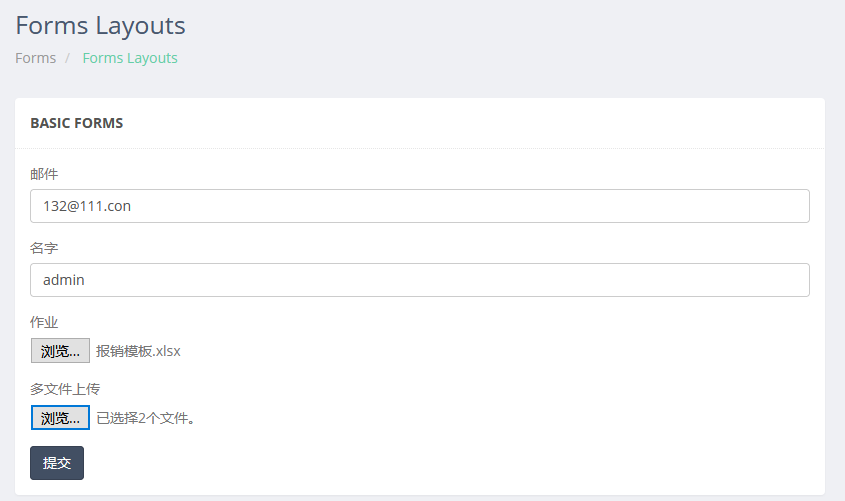
然后上传文件，控制台就会打印
2021-03-28 15:43:05.043 INFO 6256 --- [nio-8080-exec-7] c.r.mylibrary.controller.FormController : 上传的信息：email=132@111.con,username=admin,homework=16607,photos=2在对应的目录下（”I：\1”）下就会看到文件
错误处理机制 直接在templates新建一个error文件夹，把错误页面放进去 命名为4XX 5XX
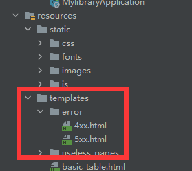
这样，当访问到403、404等的时候就会显示4XX.html
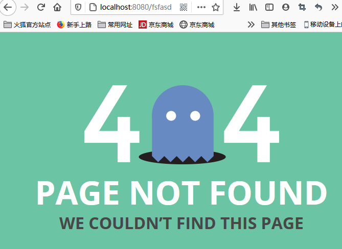
这里没有4XX的 都用404.html代替了
异常处理的源码
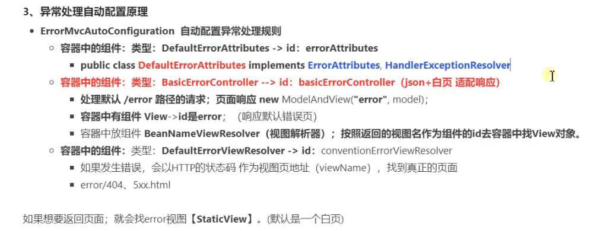
全面接管spring boot MVC 用@EnableWebMVC 全面接管
数据处理 数据库自动配置 第一步 导入数据库配置
导入数据库配置 所有的场景 都是用spring-boot-starter-data-***配置的
1 2 3 4 <dependency > <groupId > org.springframework.boot</groupId > <artifactId > spring-boot-starter-data-jdbc</artifactId > </dependency >
导入数据库驱动
1 2 3 4 5 <dependency > <groupId > mysql</groupId > <artifactId > mysql-connector-java</artifactId > </dependency >
配置数据库地址等
1 2 3 4 5 spring.datasource.url =jdbc:mysql://localhost:3306/myemployees spring.datasource.username =root spring.datasource.password =**** spring.datasource.driver-class-name =com.mysql.jdbc.Driver
配置数据库连接池Druid 导入数据连接池配置
1 2 3 4 5 <dependency > <groupId > com.alibaba</groupId > <artifactId > druid</artifactId > <version > 1.1.17</version > </dependency >
绑定数据库配置
1 2 3 4 5 6 7 8 9 10 11 12 13 14 15 16 17 18 19 20 21 22 23 24 25 26 27 28 @Configuration public class MyDataSourceConfig @ConfigurationProperties("spring.datasource") @Bean public DataSource dataSource () throws SQLException DruidDataSource druidDataSource = new DruidDataSource(); druidDataSource.setFilters("stat,wall" ); return druidDataSource; } @Bean public ServletRegistrationBean statViewServlet () StatViewServlet statViewServlet=new StatViewServlet(); ServletRegistrationBean<StatViewServlet> registrationbean=new ServletRegistrationBean<StatViewServlet> (statViewServlet,"/druid/*" ); return registrationbean; } @Bean public FilterRegistrationBean webStatFilter () WebStatFilter webStatFilter=new WebStatFilter(); FilterRegistrationBean<WebStatFilter> filterRegistrationBean=new FilterRegistrationBean<>(webStatFilter); filterRegistrationBean.setUrlPatterns(Arrays.asList("/*" )); filterRegistrationBean.addInitParameter("exclusions" ,"*.js,*.css,*.jpg,/druid/*" ); return filterRegistrationBean; } }
解读：
@ConfigurationProperties("spring.datasource")的作用是和配置文件中，spring.datasource配置绑定在一起，这样就不用额外配置druidDataSource.setUrl、setUsername等参数ServletRegistrationBean的配置是监控页的配置，传入的statViewServlet,"/druid/*"第二个参数表示监控页的页面
导入DataSource类的时候，
不要忘记了再每个函数上面要加@Bean注解 把这个加入到容器里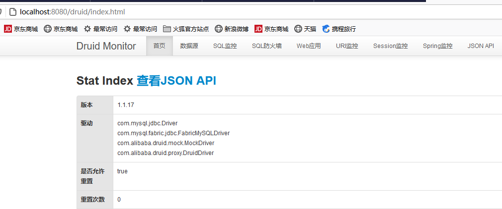
写一个测试Controller
1 2 3 4 5 6 7 8 9 10 11 @Autowired JdbcTemplate jdbcTemplate; @GetMapping("/sql") @ResponseBody public String getSql () String sql="select count(*) from employees" ; Long aLong = jdbcTemplate.queryForObject(sql, Long.class); System.out.println("sql正在查询。。" ); return String.valueOf(aLong); }
然后测试http://localhost:8080/sql
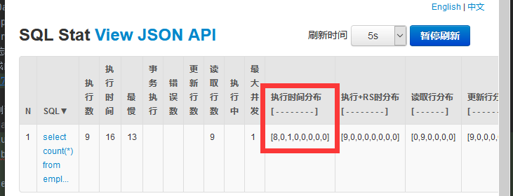
红框处，执行时间分布分别表示
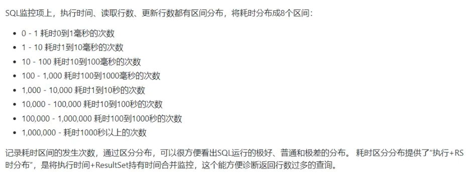
配置URI监控页配置效果：
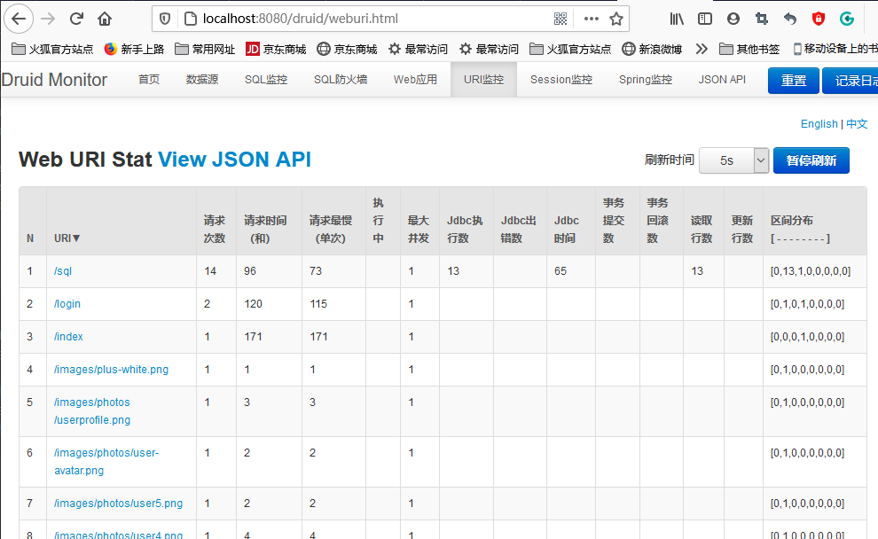
防火墙配置效果：
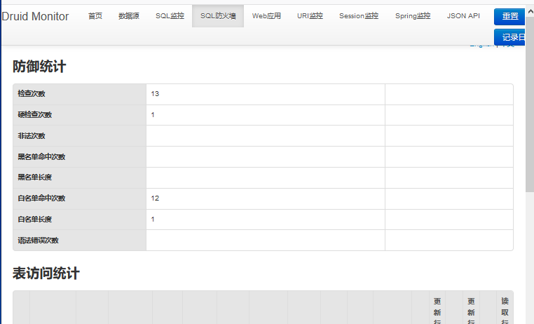
指标监控 1 2 3 4 5 <dependency > <groupId > org.springframework.boot</groupId > <artifactId > spring-boot-starter-actuator</artifactId > <version > 2.4.0</version > </dependency >
配置一下
1 2 3 4 management.endpoints.enabled-by-default =true management.endpoints.web.exposure.include =*
然后就可以通过http://localhost:8080/actuator/ …http://localhost:8080/actuator/health